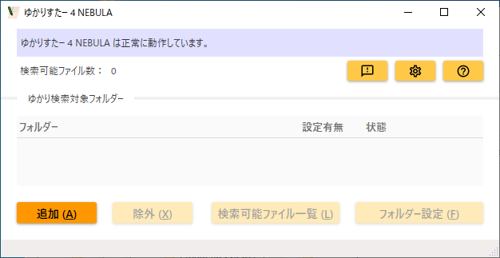
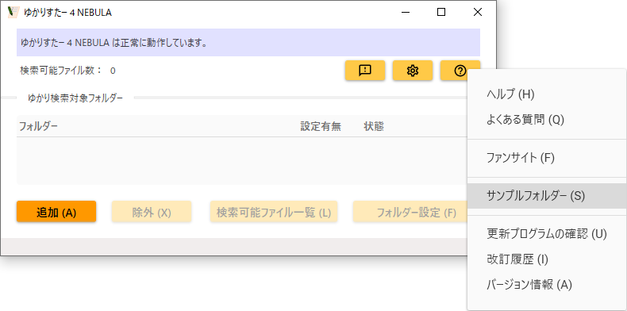
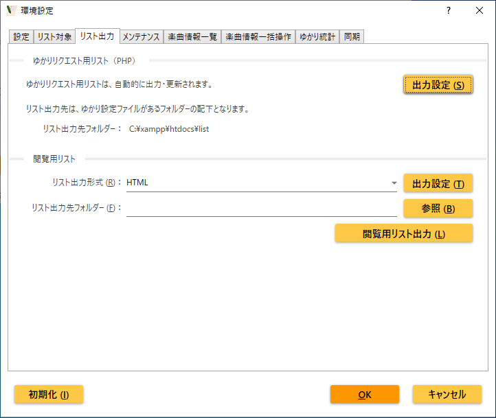
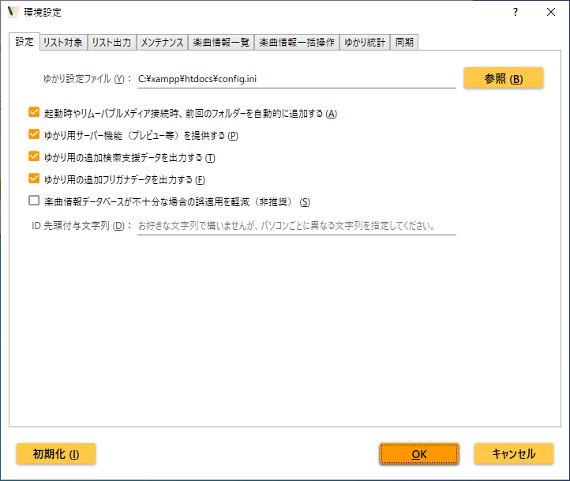

はじめに
概要
ゆかりすたー 4 NEBULA（ネビュラ）はカラオケ字幕動画ファイル（ニコカラ）を整理し、見やすくリスト化します。ファイル名から得られる情報に加え、楽曲情報データベースも活用することにより、カテゴリー別（アニメ、ゲーム等）・歌手別・年代別など、多彩なリストが作成されるため、目的のカラオケ字幕動画ファイルを見つけやすくなります。
リストのサンプルはこちらになります。
動画持ち込みカラオケ用のブラウザリクエストツールであるゆかり（ゆーふうりん氏開発）との連携機能も備えています。ゆかりすたー 4 NEBULA とゆかりが協調して動作することにより、例えば、ファイル名に歌手名が含まれていない場合でも歌手名検索が可能になったり、フリガナでの検索が可能になったりするなど、単なるファイル名検索よりも一歩進んだ検索が可能となります。もちろん、ファイル名検索も可能です。
（補足）
ゆかりすたー 4 NEBULA は、ニコカラりすたー（初代）、ゆかりすたー（ニコカラりすたー 2）、ゆかりすたー 3 METEOR の後継となる 4 代目のツールです。
ニコカラりすたー（初代）、ゆかりすたー（ニコカラりすたー 2）、ゆかりすたー 3 METEOR は既に開発を終了しましたので、今後はゆかりすたー 4 NEBULA をご利用下さい。
（補足）
本ヘルプで縮小表示されている画像は、クリックすると原寸大で表示されます。
進化ポイント
前世代のゆかりすたー 3 METEOR と比べて、ゆかりすたー 4 NEBULA は以下のような点が進化しています。
すぐに使える
以前に追加したことのあるフォルダーは既に整理が終わった状態になっているので、フォルダー追加後すぐに検索可能な状態になります。数万曲を擁するフォルダーでも、メインウィンドウ左上の「検索可能ファイル数」が 10 秒程度で増えます（所要時間はお使いのパソコンの性能によります）。
フォルダー追加直後は以前の情報（キャッシュ）での検索となりますので、最近追加・変更されたファイルは検索できませんが、バックグラウンドで情報の最新化が行われています。最新化途中ではメインウィンドウ上部が緑色表示となりますが、その間も、以前から変更されていないほとんどのファイルは検索可能です。最新化が終わってメインウィンドウ上部が青色表示になると、最新の状態で検索できるようになります。
前世代と比較して、最大 52 倍高速になりました。処理速度の詳細についてはこちらをご覧ください。
データベース精度向上
データベースに登録する際のフリガナ情報の精度を向上させました。
また、タイアップに複数のシリーズを紐付けることができるようになりました。
メインウィンドウ UI 改善
追加したフォルダーをツリー状で確認できるようになりました。
また、検索可能ファイル数が分かるようになりました。
応答性向上
起動直後やリムーバブルメディア接続時、他の動作を並行して行えるようにしました。
動作環境
ゆかりすたー 4 NEBULA 公式ページのサポート情報をご覧ください。
Windows Defender がゆかりすたー 4 NEBULA の動作に悪影響を及ぼすことがありますので、Windows Defender は使用しないことを推奨します（別のセキュリティーソフトを使用する等）。詳しくはこちらを参照して下さい。
インストール
ゆかりすたー 4 NEBULA のインストール
ゆかりすたー 4 NEBULA を Microsoft Store から入手してください。
更新（バージョンアップ）は自動的に行われます。
ショートカットの作成
例えば、スタートメニューに登録されているゆかりすたー 4 NEBULA のアイコンをデスクトップに（左ボタンで）ドラッグ＆ドロップすることにより、デスクトップにショートカットを作成することができます。
ゆかりのインストール
ゆかりすたー 4 NEBULA をゆかり（ゆーふうりん氏開発）と連携させる場合は、ゆかりすたー 4 NEBULA に加えてゆかりもインストールされている必要があります。ゆかりのインストールについてはゆかり公式サイトをご覧ください。
裏技
ゆかりをインストールしていないけれどゆかりとの連携機能で作成されるファイルを確認したい、と言う場合は config.ini という名前のファイル（中身は何でも構いません）を以下の場所に保存してください。
C:\xampp\htdocs\config.ini
これにより、以下のフォルダーに、ゆかりとの連携機能によるファイルが作成されます。
C:\xampp\htdocs\list
チュートリアル
ゆかりすたー 4 NEBULA でフォルダー内のカラオケ字幕動画ファイルを整理し、閲覧用リストを作成するまでの一連の流れを説明します。
起動
スタートメニューから
ゆかりすたー 4 NEBULA を起動すると、スプラッシュウィンドウ（オープニングウィンドウ）が表示された後で、メインウィンドウが表示されます。
メインウィンドウ上部が青色表示となり、「ゆかりすたー 4 NEBULA は正常に動作しています」と表示されていれば、ゆかりすたー 4 NEBULA は正常に動作しています。
メインウィンドウ上部が赤色表示となり、「ゆかり設定ファイルが正しく指定されていません」と表示されている場合、一部機能が使えませんが、このチュートリアルはその状態でも問題ありません。
ID 接頭辞の設定ウィンドウが表示された場合は、説明や例に従って ID 接頭辞を入力してください。ID 接頭辞の詳細はこちらをご覧ください。よく分からない場合は、「あああ」などの適当な文字列を入力しておいても、当面は問題ありません。
フォルダー追加
閲覧用リストを作成したいカラオケ字幕動画ファイルが保存されているフォルダーを指定します。
このチュートリアルでは、用意されているサンプルフォルダーを指定します。

メインウィンドウのヘルプボタン（？マークのボタン）をクリックすると表示されるポップアップメニューから「サンプルフォルダー」をクリックします。エクスプローラーでサンプルフォルダーが表示されます。
サンプルフォルダーの中にある「AAAさんの例」～「DDDさんの例」の 4 つのフォルダーを、エクスプローラーからゆかりすたー 4 NEBULA のメインウィンドウにドラッグ＆ドロップし、フォルダーを追加します。もしくは、エクスプローラーで 1 つ上の「Documents」フォルダーを表示してから「SampleFolderSettings」フォルダーをドラッグ＆ドロップすると、すべてのサンプルフォルダーをまとめて追加できます。
追加したフォルダーがメインウィンドウの一覧に表示されます。
誤ったフォルダーを追加してしまった場合は、一覧からフォルダーを選択して「除外」ボタンをクリックすると、フォルダーが除外されます。
閲覧用リストの出力

メインウィンドウの環境設定ボタン（歯車マークのボタン）をクリックし、リスト出力タブをクリックします。
閲覧用リストの「リスト出力形式」が HTML になっていることを確認します。
お好みで「リスト出力先フォルダー」を指定します（指定しない場合はドキュメントフォルダーに出力されます）。
「閲覧用リスト出力」ボタンをクリックすると、閲覧用リストが出力され、ブラウザで閲覧用リストが開かれます。
開かれたリストは、こちらのサンプルリストと同様のものになっているはずです。
リストの「カテゴリー別」の「アニメ」をクリックし、「さ」をクリックすると、「さ」で始まるアニメ名が一覧表示されます。「さすがまさる君」をクリックすると、さすがまさる君に関連する楽曲のカラオケ字幕動画ファイルが一覧表示されます。この場合は 1 曲が該当し、さすがまさる君のオープニング（OP）曲「まさるかにんげんのちから」が「さすがまさる君_まさるかにんげんのちから.mp4」というファイル名であることが分かります。ファイル名に歌手名は含まれていませんが、歌手名が「流石勝」であることを判別して表示しています。
別の切り口から楽曲を見つけることもできます。
リストの「歌手別」の「さ」をクリックし、「流石勝」をクリックすると、流石勝が歌っている曲がタイアップ（アニメ等の番組）ごとにまとめて表示されます。先ほどカテゴリー別で見た「さすがまさる君」オープニング曲「まさるかにんげんのちから」が表示されます。
このように、カラオケ字幕動画ファイルを様々な切り口で見つけることのできるリストを作成できることが確認できました。
以上でチュートリアルは終了です。
より詳しい使い方は次章以降をご覧ください。
（補足）
サンプルリストについての詳細は、サンプル章をご覧ください。
属性による整理
属性とは
チュートリアルでは、カテゴリー別や歌手別といった様々な切り口でリストが作成されることを確認しました。
「カテゴリー」「タイアップ名（アニメ等の番組名）」「楽曲名」「歌手名」のように、カラオケ字幕動画ファイルの整理に役立つ情報を「属性」と呼びます。
例えば、「さるかに合戦」というタイトルのアニメ番組の「蜂が飛ぶ」という楽曲のカラオケ字幕動画ファイルが「さるかに合戦_蜂が飛ぶ.mp4」だったとします。単にファイル名でリストを整理した場合、「さるかに合戦」「蜂が飛ぶ」という 2 つのキーワードしかわかりません。しかも、そのキーワードが何を意味しているのか明示することができません（「さるかに合戦」がタイアップ名なのか歌手名なのかわかりません）。
しかし、属性による整理をすることで、以下のような情報が分かります。
| カテゴリー | アニメ |
|---|---|
| タイアップ名 | さるかに合戦 |
| 楽曲名 | 蜂が飛ぶ |
| 歌手名 | 蜂八兄弟 |
| ファイル名 | さるかに合戦_蜂が飛ぶ.mp4 |
ゆかりすたー 4 NEBULA では、属性を活用し、見やすいリストを作成しています。
フォルダー設定
属性での整理を行えるようにするために、ゆかりすたー 4 NEBULA は、ファイル名を解析してさまざまな情報（タイアップ名や楽曲名など）を読み取ります。
この時に重要になってくるのが、ファイル名がどのようなルール（命名規則）で名付けられているか、ということです。「さるかに合戦_蜂が飛ぶ.mp4」の例では、命名規則が「タイアップ名_楽曲名」となっています。一方で、「蜂が飛ぶ_さるかに合戦.mp4」というファイル名であれば、命名規則は「楽曲名_タイアップ名」ということになります。
命名規則を指示してゆかりすたー 4 NEBULA がファイル名を適切に解析できるようにするために行うのが、フォルダー設定です。
フォルダー設定を行うには、メインウィンドウのゆかり検索対象フォルダー一覧からフォルダーを選択し、「フォルダー設定」ボタンをクリックします。すると、フォルダー設定ウィンドウが開きます。フォルダー設定ウィンドウの一番上に設定対象フォルダー名が表示されているので確認してください。
ファイル命名規則タブ
フォルダー設定ウィンドウには 2 つのタブがあり、最初のタブが「ファイル命名規則」タブです。このタブでは、設定対象フォルダー内に保存されているカラオケ字幕動画ファイルの命名規則を指定します。
「このフォルダー内にあるカラオケ字幕動画ファイルの命名規則」欄に命名規則を入力し、「追加」ボタンをクリックすることで、命名規則を指定できます。
「さるかに合戦_蜂が飛ぶ.mp4」のように、「拡張子を除く部分」が
タイアップ名_楽曲名
の命名規則でファイル名を付けている場合の指定方法は以下のようになります。
ファイル命名規則入力欄の右側にあるタグボタンをクリックすると、カテゴリーやタイアップ名などの項目名がポップアップメニューに表示されるので、「タイアップ名」をクリックします。すると、入力欄には「<Program>」が入力されます。続いて、キーボードから「_」を入力し、さらに、タグボタンのポップアップメニューから「楽曲名」をクリックして「<Title>」を入力します。これにより、命名規則入力欄には
<Program>_<Title>
と入力されましたので、「追加」ボタンをクリックして命名規則に追加します。
命名規則を指定する際、属性と属性の間は必ず何かしらの区切り文字を入れてください。先の例では「_」を区切り文字にしています。区切り文字を使わず <Program><Title> のようにしてしまうと、どこまでがタイアップ名なのか判別することができないため、区切り文字を使わない命名規則はエラーになります。
命名規則には、拡張子部分は含めないで下さい。
命名規則は複数登録することが可能で、複数登録されている場合は、上から順に命名規則とファイル名が合致するか検索されます。
命名規則の記述例をいくつか記載しておきます。
| ファイル名 | 命名規則 |
|---|---|
| さるかに合戦_蜂が飛ぶ | <Program>_<Title> |
| 蜂が飛ぶ (On-Off) さるかに合戦 | <Title> (<Track>) <Program> |
| 蜂が飛ぶ【2tr-on-off】さるかに合戦 | <Title>【<Track>】<Program> |
| さるかに合戦 - 蜂が飛ぶ／蜂八兄弟 | <Program> - <Title>／<Artist> |
| 【さるかに合戦】蜂が飛ぶ／蜂八兄弟(On-Off) | 【<Program>】<Title>／<Artist>(<Track>) |
| 【さるかに合戦】「蜂が飛ぶ」[OP][蜂八兄弟][2tr On-VC] | 【<Program>】「<Title>」[<OpEd>][<Artist>][<Track>] |
（補足）
ゆかりすたー 4 NEBULA の前身ツールであるニコカラりすたーでは、一部の項目を無視して命名規則を設定することが推奨されていましたが、ゆかりすたー 4 NEBULA では、ファイル名に含まれているすべての項目を命名規則として含めることが推奨されています。
固定値項目タブ
フォルダー設定ウィンドウの 2 つめのタブは「固定値項目」タブです。このタブでは、フォルダー内のすべてのカラオケ字幕動画ファイルに付与する項目を指定します。例えば、フォルダー内のすべてのカラオケ字幕動画ファイルの制作者を AAA さんであると指定することなどが可能です。
指定したい「項目」をコンボボックスから選び、「値」欄に値を入力（または選択）してから「追加」ボタンをクリックして、固定値項目に追加します。
ファイル検索プレビュー
2 つのタブの下にある「ファイル検索」ボタンをクリックすると、設定内容が保存され、2 つのタブで設定した内容に従って設定対象フォルダー内のファイルがどうのように解析されるかプレビューできます。設定対象フォルダー内のファイルが一覧表示され、設定に従って解析された項目が表示されます。
「項目と値」が空欄になっているファイルは、ファイル名が正しく解析されていません。ファイル命名規則を追加するか、または、ファイル名を修正するなどして、フォルダー内のすべてのファイル名が正しく解析されるようにして下さい。
フォルダー設定の完了
フォルダー設定を終えたら「OK」ボタンをクリックして、フォルダー設定ウィンドウを閉じます。
設定を終えると、メインウィンドウのフォルダー一覧で、設定を行ったフォルダーの「設定有無」が「有」に変化します。
フォルダーにサブフォルダーがある場合、「＞」マークをクリックすると、サブフォルダーを一覧表示できます。1 つのフォルダーの設定を行うと、そのサブフォルダーにも設定が適用されます。一覧においては「設定有無」が「親に有」と表示されます。サブフォルダー独自の設定を行いたい場合は、サブフォルダーの「設定」ボタンをクリックして設定を行って下さい。
ゆかり検索対象フォルダーの全てのフォルダーで、「設定有無」が「有」または「親に有」になるようにします。
楽曲情報データベースの登録
楽曲情報データベースとは
フォルダー設定を行うことにより、「さるかに合戦_蜂が飛ぶ.mp4」というファイル名から「タイアップ名＝さるかに合戦」「楽曲名＝蜂が飛ぶ」という 2 つの属性を読み取ることができるようになりました。
しかし、フォルダー設定だけでは、さるかに合戦がアニメのタイアップであることや、歌手名が蜂八兄弟であることは分かりません。
ファイル名からは読み取れない属性も含めて、様々な属性を登録しておくデータベースが「楽曲情報データベース」です。楽曲の正式名称、タイアップ名、歌手名、作曲者、それぞれのフリガナ、といった楽曲に関する様々な情報を登録できます。楽曲情報データベースをに属性を登録し、ファイル名から読み取った属性と組み合わせることで、「カテゴリー＝アニメ」「歌手名＝蜂八兄弟」といったさらなる属性を確認することができるようになります。
楽曲情報データベースのすべての項目を入力するには、ゆかりすたー 4 NEBULA の画面上で情報を入力していきます。
（補足）
前世代のゆかりすたー 3 METEOR に搭載されていた anison.info CSV のインポート機能は廃止されました。データ構造が異なり、精度良くデータを反映することが困難なためです。
以降の節で、各画面の説明を行います。
名前を揃える（名称の編集ウィンドウ）
フォルダー設定ウィンドウで「解析結果確認」ボタンをクリックし、楽曲情報データベースに情報を入力したいカラオケ字幕動画ファイルを選択して「名称の編集」ボタンをクリックすると、「名称の編集ウィンドウ」が開きます。
「名称の編集ウィンドウ」は、楽曲情報データベース登録の入口となるウィンドウです。
名称の編集ウィンドウでは、ファイル名から取得した「タイアップ名」「楽曲名」が楽曲情報データベースに登録済みかどうかが表示されます。登録済みであれば「データベース登録済」と表示され、未登録の場合は赤字で「データベース未登録」と表示されます。
楽曲情報データベースに登録済みの場合は、「タイアップ詳細編集」「楽曲詳細編集」ボタンで登録内容を確認・変更できます。それぞれのやり方については、後続の節を参照してください。
一方、赤字で「データベース未登録」と表示されている場合は、以下のように対応していきます。タイアップが未登録の場合を例に説明しますが、楽曲が未登録の場合でもやり方は同様です。
まず、タイアップの「検索」ボタンをクリックし、検索ウィンドウでタイアップが本当に未登録か検索します。特にサブタイトルがある場合は、サブタイトル部分を削除して検索するとヒットする場合もあります。または、スペルミスでヒットしない場合もありますので、スペルをよく確認して検索します。
検索してヒットした場合、その項目を選択します。ファイル名から取得したタイアップ名が、楽曲情報データベースに登録済みのタイアップ名と異なっていた場合は、自動的に「タイアップ名を揃える」のチェックが入り、名寄せが行われます。例えば、ファイル名から取得したタイアップ名が「猿蟹合戦」と漢字表記だったとして、楽曲情報データベースに登録されている正式名称は「さるかに合戦」とひらがな表記だった場合、検索およびリスト表記は「さるかに合戦」となります。
「OK」ボタンをクリックすると名称の編集ウィンドウが閉じ、名寄せ情報が楽曲情報データベースに保存されます。
検索してもヒットしない場合は、新規にタイアップ情報を登録することになります。「タイアップ詳細編集」ボタンをクリックすると、新規にタイアップ情報を登録することができます。タイアップ情報の登録については、後続の節を参照してください。
カラオケ字幕動画ファイルのファイル名が間違っていて検索にヒットしなかった場合の対応策としては、当然ながら、ファイル名を修正するという方法もありますので、やりやすい方で対処して下さい。
ゆかりすたー 4 NEBULA の画面上でタイアップ名・楽曲名を名寄せするメリットとしては、
- 既にたくさんのカラオケ字幕動画ファイルを作っていた場合、ファイル名のすべてをリネームするのが大変なのに対し、画面上での修正は 1 タイアップにつき 1 回で済む。
- 継続的に動画サイトなどからカラオケ字幕動画ファイルをダウンロードする場合、1 回画面上で修正しておけば、以降のダウンロード時には対応が不要となる。
- 「<」のようにファイル名として使用できない文字がタイアップ名などに含まれている場合は、ファイル名では対処のしようがない。
などが挙げられます。
タイアップ情報の新規登録と変更（タイアップ詳細情報の編集ウィンドウ）
名称の編集ウィンドウでタイアップ名の正式名称を検索してもヒットしない場合、「タイアップ詳細編集」ボタンをクリックすると、タイアップ詳細情報の編集ウィンドウが開き、タイアップ情報を新規に入力することができます（必ず、本当に未登録かどうか検索してからにして下さい）。
既に登録済みのタイアップに対して「タイアップ詳細編集」ボタンをクリックすると、タイアップ詳細情報の編集ウィンドウが開き、登録済みのタイアップ情報を変更することができます。
なお、タイアップ名を変更すると、可能な場合はフリガナが自動更新されます。タイアップ名の先頭文字のフリガナを自動解析できない場合（先頭文字がアルファベットの場合など）はフリガナは自動更新されません。
制作会社情報の新規登録と変更（制作会社詳細情報の編集ウィンドウ）
タイアップ詳細情報の編集ウィンドウで制作会社を検索してもヒットしない場合、「制作会社詳細編集」ボタンをクリックすると、制作会社詳細情報の編集ウィンドウが開き、制作会社情報を新規に入力することができます（必ず、本当に未登録かどうか検索してからにして下さい）。
既に登録済みの制作会社に対して「制作会社詳細編集」ボタンをクリックすると、制作会社詳細情報の編集ウィンドウが開き、登録済みの制作会社情報を変更することができます。
シリーズの選択
タイアップ詳細情報の編集ウィンドウで「シリーズあり」にチェックを入れて検索ボタンをクリックすると、シリーズを検索して、タイアップのシリーズを選択することができます。シリーズが一つの場合はこの方法が簡単です。
一方、「複数シリーズ検索」ボタンをクリックすると複数シリーズの検索ウィンドウが開き、複数のシリーズを選択することができます。「検索して追加」ボタンをクリックするとシリーズを一つ選択できますが、複数回繰り返すことで、複数のシリーズを選択できます。
シリーズ情報の新規登録と変更（シリーズ詳細情報の編集ウィンドウ）
複数シリーズの検索ウィンドウでシリーズを検索してもヒットしない場合、「新規シリーズ作成」ボタンをクリックすると、シリーズ詳細情報の編集ウィンドウが開き、シリーズ情報を新規に入力することができます（必ず、本当に未登録かどうか検索してからにして下さい）。
既に登録済みのシリーズに対して「シリーズ詳細編集」ボタンをクリックすると、シリーズ詳細情報の編集ウィンドウが開き、登録済みのシリーズ情報を変更することができます。
楽曲情報の新規登録と変更（楽曲詳細情報の編集ウィンドウ）
名称の編集ウィンドウで楽曲名の正式名称を検索してもヒットしない場合、「楽曲詳細編集」ボタンをクリックすると、楽曲詳細情報の編集ウィンドウが開き、楽曲情報を新規に入力することができます（必ず、本当に未登録かどうか検索してからにして下さい）。
既に登録済みの楽曲に対して「楽曲詳細編集」ボタンをクリックすると、楽曲詳細情報の編集ウィンドウが開き、登録済みの楽曲情報を変更することができます。
タグの選択
楽曲詳細情報の編集ウィンドウで「タグあり」にチェックを入れて検索ボタンをクリックすると、タグを検索して、楽曲のタグを選択することができます。タグが一つの場合はこの方法が簡単です。
一方、「複数タグ検索」ボタンをクリックすると複数タグの検索ウィンドウが開き、複数のタグを選択することができます。「検索して追加」ボタンをクリックするとタグを一つ選択できますが、複数回繰り返すことで、複数のタグを選択できます。
タグ情報の新規登録と変更（タグ詳細情報の編集ウィンドウ）
複数タグの検索ウィンドウでタグを検索してもヒットしない場合、「新規タグ作成」ボタンをクリックすると、タグ詳細情報の編集ウィンドウが開き、タグ情報を新規に入力することができます（必ず、本当に未登録かどうか検索してからにして下さい）。
既に登録済みのタグに対して「タグ詳細編集」ボタンをクリックすると、タグ詳細情報の編集ウィンドウが開き、登録済みのタグ情報を変更することができます。
歌手・作詞者・作曲者・編曲者の選択
楽曲詳細情報の編集ウィンドウで「歌手あり」にチェックを入れて検索ボタンをクリックすると、歌手を検索して、楽曲の歌手を選択することができます。歌手が一人の場合はこの方法が簡単です。
一方、「複数歌手検索」ボタンをクリックすると複数歌手の検索ウィンドウが開き、複数の歌手を選択することができます。「検索して追加」ボタンをクリックすると歌手を一人選択できますが、複数回繰り返すことで、複数名の歌手を選択できます。
作詞者・作曲者・編曲者についても同様です。
歌手・作詞者・作曲者・編曲者情報の新規登録と変更（歌手詳細情報の編集ウィンドウ他）
複数歌手の検索ウィンドウで歌手を検索してもヒットしない場合、「新規人物作成」ボタンをクリックすると、歌手詳細情報の編集ウィンドウが開き、歌手情報を新規に入力することができます（必ず、本当に未登録かどうか検索してからにして下さい）。
既に登録済みの歌手に対して「人物詳細編集」ボタンをクリックすると、歌手詳細情報の編集ウィンドウが開き、登録済みの歌手情報を変更することができます。
作詞者・作曲者・編曲者についても同様です。
なお、歌手と作詞者が同じ人物の場合は、歌手として登録した当該人物は、作詞者として検索してもヒットしますので、同じ人物情報を使用します。
登録結果の確認
登録した楽曲情報データベースをもとに、カラオケ字幕動画ファイルがきちんと整理されているか、以下の方法で確認ができます。
名称の編集ウィンドウで確認
名称の編集ウィンドウの下半分に、楽曲情報データベースを適用した結果の属性判定結果が表示されます。
楽曲情報データベースの内容を修正すると、直ちに情報が最新となりますので、名称の編集ウィンドウで確認するのが最も手軽です。
HTML リスト表示で確認
メインウィンドウのゆかり検索対象フォルダーに追加されたフォルダー内にあるカラオケ字幕動画ファイルについて、閲覧用リストを HTML 形式で出力し、楽曲情報データベースの内容がリストに反映されているかを確認します。
HTML 形式でのリスト出力については、リスト出力タブ：閲覧用リスト節を参照して下さい。
なお、楽曲情報データベースの内容を更新した場合、リストに反映させるには一度ゆかりすたー 4 NEBULA を再起動する必要があります。
ゆかりでのリスト表示で確認
ゆかり連携機能を使用している場合、メインウィンドウのゆかり検索対象フォルダーに追加されたフォルダー内にあるカラオケ字幕動画ファイルについて、自動的にゆかり用リストが出力されます。
ゆかりでのリスト表示節に記載の手順でゆかり用リストを表示し、楽曲情報データベースの内容がリストに反映されているかを確認します。
なお、楽曲情報データベースの内容を更新した場合、リストに反映させるには一度ゆかりすたー 4 NEBULA を再起動する必要があります。
未登録検出
楽曲情報データベースの内容がリストに反映されない原因の多くは、カラオケ字幕動画ファイルのファイル名が間違っているために、ファイル名から取得した情報（楽曲名など）が間違ってしまっていて、楽曲情報データベースの情報（楽曲名など）と一致しない場合です。
楽曲情報データベースとファイル名の情報が合致しているかどうかを簡単に検出するには、「未登録検出」が便利です。
フォルダー設定ウィンドウを開き、「ファイル検索」ボタンをクリックしてプレビューの後、「未登録検出」ボタンをクリックします。すると、解釈されたファイルの内容が楽曲情報データベースに登録されていない行が選択されるので、合致していないものを検出することができます。
うまくリスト化されない場合
楽曲情報データベースの内容がリストに反映されないカラオケ字幕動画ファイルを発見した場合は、うまくリスト化されない場合の対処法をご覧ください。
データベース一覧ウィンドウ
環境設定ウィンドウの「楽曲情報一覧」タブより、楽曲情報データベースの内容を一覧表示できます。
例えば、タイアップ一覧ウィンドウでは、今までに登録したタイアップの情報が一覧できます。一覧のヘッダー部分（「フリガナ」など）をクリックすると、一覧をソートできます。登録されているタイアップの数が多い場合、ソートに時間がかかる場合があります。
検索ボタンでタイアップを検索・選択することができます。
編集ボタンをクリックすると、選択したタイアップを編集できます。
目的のタイアップがまだ登録されていない場合（検索しても見つからない場合）、タイアップを新規作成することもできます。
うまくリスト化されない場合の対処法
思い通りにリスト化されない（例えば、カテゴリー「その他」に分類されてしまう）ファイルがある場合は、以下のポイントを順に確認していきましょう。
フォルダー設定の確認
ファイル一覧ウィンドウで思い通りにリスト化されないファイルを見つけたら、「フォルダー設定」ボタンをクリックしてフォルダー設定ウィンドウを開き、ファイル命名規則が正しく適用されているかを確認します。
フォルダー設定ウィンドウの「ファイル検索」ボタンをクリックして、検索結果を表示します。「項目と値」の欄に解釈された楽曲名などが表示されているか、確認して下さい。
例えば右の画像の例では、3 つめのファイル「桃太郎＿桃から生まれた.mp4」において、固定値項目で指定したカラオケ動画制作者しか解釈されておらず、ファイル命名規則で指定した番組名や楽曲名が解釈されていません。
原因は、ファイル名命名規則では「<Program>_<Title>」というように、番組名と楽曲名を「半角の」アンダーバーで区切っているのに対し、ファイル名が「全角の」アンダーバーで区切っているためです。
このように、「項目と値」が他と比べて少ない（または、空欄になっている）ファイルは、ファイル命名規則がうまく適用されていません。
対処法としては、
- ファイル名を半角アンダーバーに修正する。
- ファイル命名規則に全角アンダーバーで区切る規則を追加し、2 つの規則を登録する。
というように、ファイル名を修正する方法と、ファイル命名規則を見直す方法の 2 種類があります。やりやすい方を選んで対処して下さい。
楽曲情報データベースと表記の一致の確認
楽曲情報データベースの情報がリストに反映されない一因として、ファイル名から取得した「楽曲名」などの情報の表記と、楽曲情報データベースに登録されている「楽曲名」などの情報の表記が一致していないことが考えられます。特に、記号類の有無に注意して下さい。
うまく情報が反映されないファイルがあるフォルダーのフォルダー設定ウィンドウを開き、「ファイル検索」ボタンをクリックします。ファイル一覧が表示されるので、「項目と値」列が空欄または、フォルダー固定値項目のみしか表示されていない行を探します。
「ファイル検索」ボタンをクリックしてファイル一覧が表示されている時に、「未登録検出」ボタンをクリックすると、楽曲情報データベースと表記が一致していないファイルが選択されるので、うまく情報が反映されないファイルを簡単に見つけることができます。
問題のある行を見つけたら、行の右側の「編集」ボタンをクリックし、名称の編集ウィンドウを開き、楽曲情報データベースを編集します。名称の編集ウィンドウの操作方法については、名前を揃える節を参照して下さい。
ファイル一覧ウィンドウ
ゆかり連携機能を使用している場合、メインウィンドウの「ファイル一覧」ボタンをクリックすると、ファイル一覧ウィンドウが開きます。
ファイル一覧ウィンドウには、ゆかり検索対象フォルダーに追加したフォルダー内にあるすべてのファイルの情報が項目別に表示されます。
「検索」ボタンをクリックするとキーワード検索ができます。思い通りにリスト化されないファイルのファイル名などで検索することにより、当該ファイルを素早く見つけることができます。
「↓□検索」ボタンをクリックすると、選択されているセルと同じ列の中からデータが存在しない項目を検索できます。逆に、「↓■検索」ボタンをクリックすると、選択されているセルと同じ列の中からデータが存在する項目を検索できます。
リストについて
ゆかりすたー 4 NEBULA が出力するリストについて、補足が必要と思われる事項について解説します。
情報源の優先順位
ゆかりすたー 4 NEBULA は、
- 楽曲情報データベースに登録されている情報
- 「フォルダー設定→ファイル命名規則」を元にファイル名から取得した情報
- 「フォルダー設定→固定値項目」から取得した情報
の 3 種類の情報を用いてカラオケ字幕動画ファイルを整理し、リスト化を行います。
1 つの項目が複数の情報源にある場合は、上に記載の順序で優先されます。例えば、楽曲情報データベースとファイル名の両方から「歌手名」を取得できた場合、楽曲情報データベースから取得した「歌手名」をリストに記載します。
（補足）
ゆかりすたー 4 NEBULA の前身ツールであるニコカラりすたーとは優先順位が異なっています。ニコカラりすたーを使用していた方は、優先順位にご注意下さい。
リスト項目
- スマートトラック列（On / Off）……ファイル命名規則などから取得したトラック情報を解析し、オンボーカル・オフボーカルのトラックがある場合に○印を表示します。
- トラック情報を「-」「_」「+」「,」「.」「 」（半角スペース）で区切ります。
（例）On（鼠合唱団）-On（丑合唱団）-Off →「On（鼠合唱団）」「On（丑合唱団）」「Off」の 3 つに区切ります。 - 区切られた文字のうち「Cho」「Cut」「DAM」「Guide」「GuideVocal」「Inst」「JOY」「Off」「OffCho」「OffVocal」「Offのみ」「Spleeter」「VC」「オフ」「オフボ」「オフボーカル」「ボイキャン」「ボーカルキャンセル」「配信」をオフボーカルと見なします。
- 区切られた文字のうち「2tr」「2ch」「OnOff」「OffOn」をオンボーカルオフボーカル両方と見なします。
- 区切られた文字のうち上記以外をオンボーカルと見なします。
- 区切られた文字の大文字小文字は区別しません。全角半角も区別しません。例えば、全角大文字「ＣＨＯ」も「Cho」と同じくオフボーカルと見なします。
- フォルダー設定の固定値項目などで「<Onvocal>」が「1」に設定されている場合、オンボーカルがあるものと見なします。
- フォルダー設定の固定値項目などで「<Offvocal>」が「1」に設定されている場合、オフボーカルがあるものと見なします。
- トラック情報を「-」「_」「+」「,」「.」「 」（半角スペース）で区切ります。
ゆかり連携
ゆかり連携機能とは
ゆかりとは、ゆーふうりん氏が開発した動画持ち込みカラオケ用のブラウザリクエストツールです。カラオケ字幕動画ファイルを検索・予約できます。
ゆかりすたー 4 NEBULA のゆかり連携機能は、文字通り、ゆかりすたー 4 NEBULA とゆかりを連携させる機能です。ゆかりでカラオケ字幕動画ファイルを検索する際、ファイル名による検索だけではなく、属性による検索も行えるようになり、利便性が向上します。例えば、歌手名の「蜂八兄弟」で検索して「さるかに合戦_蜂が飛ぶ.mp4」がヒットするようになります。
ゆかり連携機能を使用するためには、以下が必要となります。
- ゆかりのインストール
- ゆかりの設定
ゆかりのインストールについてはゆかり公式サイトをご覧ください。
ゆかりの設定について、以降の節で順に説明していきます。
ゆかりの設定
ゆかりのバージョン確認
ゆかりは v0.09.9-alpha-92 以降のバージョンを使用してください。それよりも前のバージョンのゆかりではゆかりすたー 4 NEBULA との協調動作ができません。
ウェブブラウザでゆかりにアクセスし（ゆかりすたー 4 NEBULA と同じパソコンからアクセスする場合は http://localhost/）、メニューから［Help 等→設定］をクリック、ユーザー名（admin）を入力してゆかり設定ページを開きます。
ページ末尾のほうにある「オンラインアップデート画面」ボタンをクリックします。
ゆかりの現在のバージョンが表示されますので、上記のバージョン以降かどうか確認してください。
バージョンが古い場合は、最新版の「更新」ボタンをクリックして最新バージョンにアップデートしてください。
検索設定
ゆかりの設定ページの「検索画面設定」の「検索画面に表示する項目」のところを表示します。
「ファイル名検索（りすたー）」と「りすたー DB 検索」のチェックを入れます。
「りすたー DB ファイルパス」は、通常はデフォルトのまま（list\List.sqlite3）で構いません。ゆかりを特殊な運用している場合は、運用に合わせて指定して下さい。
トップ画面メッセージの設定
ゆかりの設定ページの「トップ画面メッセージの設定」のところを表示し、「予約一覧（トップ）画面表示メッセージ」および「検索画面表示メッセージ」の 2 箇所に以下のように入力します。
【ゆかりすたー 4 NEBULA 一覧】<br> <a href="list/List_index_New.php?yukarihost=#yukarihost#">新着</a> <a href="list/index.php?yukarihost=#yukarihost#">カテゴリー別</a> <a href="list/List_index_Series.php?yukarihost=#yukarihost#">シリーズ別</a> <a href="list/List_index_Season.php?yukarihost=#yukarihost#">期別</a> <a href="list/List_index_Period.php?yukarihost=#yukarihost#">年代別</a> <a href="list/List_index_Artist.php?yukarihost=#yukarihost#">歌手別</a> <a href="list/List_index_Composer.php?yukarihost=#yukarihost#">作曲者別</a> <a href="list/List_index_Tag.php?yukarihost=#yukarihost#">タグ別</a> <br>
「設定反映」ボタンをクリックすると、ゆかりの設定が更新されます。
ゆかりでの検索
ゆかりの検索ページにアクセスします。
「キーワード検索」欄に、ゆかりすたー 4 NEBULA に追加したフォルダー内にあるファイルのファイル名、タイアップ名、楽曲名などを入力すると、検索結果として表示され、曲をリクエストすることができます。
「キーワード検索」は作品名だけではなく、楽曲名やファイル名などが一致した場合も検索結果として表示します。例えば、「さるかに」で検索すると、「さるかに合戦」というタイトルのアニメ番組のカラオケ動画だけではなく、「さすがまさる君」というタイトルのアニメ番組の「まさるかにんげんのちから」という曲名のカラオケ動画も検索結果として表示します。
作品名に「さるかに」が含まれる場合のみ検索したい場合は、「作品名検索」欄に「さるかに」と入力することで、「さるかに合戦」の楽曲（「蜂が飛ぶ」等）が検索される一方で、「さすがまさる君」の楽曲である「まさるかにんげんのちから」は検索されなくなります。
ゆかりでのリスト表示
ゆかりの検索ページにアクセスし、【ゆかりすたー 4 NEBULA 一覧】の下にある「カテゴリー別」などをクリックします。
ゆかりすたー 4 NEBULA が生成したリストが表示され、ファイル名をクリックすると曲をリクエストすることができます。
利用者からの問題報告
リスト問題報告機能とは
リスト問題報告機能は、ゆかり用リストを閲覧した人が問題（例：楽曲名が間違っている等）に気付いた際、その場で指摘できる機能です。
リスト作成者だけではなく利用者全員でのチェックが可能となることにより、リストの精度を高めるチャンスが飛躍的に向上します。
利用者による問題報告のやり方
ゆかり用リストの右端には、「報告」リンクが付いています（閲覧用リストの HTML リストには付いていないので間違えないで下さい）。
利用者がリストの問題を発見した場合、問題のある箇所の報告リンクをクリックします。
「リストの問題を報告」ページが開き、現在のリストの内容が表示され、その下に、問題の内容を入力できるフォームが表示されます。
問題のある項目が何かを選択したうえで、正しい内容や、コメント、報告者名を入力します。
「問題を報告する」ボタンをクリックすると、報告完了です。
報告された問題の確認
利用者から報告されたリストの問題をゆかりすたー 4 NEBULA 上で確認するには、ゆかりすたー 4 NEBULA のメインウィンドウを見ます。メインウィンドウ上部の「報告されたリストの問題を一覧表示」ボタン上に、報告された問題の数が表示されます。
「報告されたリストの問題を一覧表示」ボタンをクリックすると、報告された問題が一覧表示されます。
報告された問題への対応
問題一覧の中から目的の報告を選択して「詳細」ボタンをクリックすると、「報告されたリスト問題の管理」ウィンドウが開き、問題の詳細を見ることができます。
そこから各種設定ウィンドウを開けますので、
- 名称の編集ウィンドウから名寄せや楽曲情報データベースの修正をする
- フォルダー設定ウィンドウから命名規則を修正する
などの対応を取ります。
その後、「対応コメント」に対応内容を入力し、対応状況を「完了」とすることで、対応の記録を残せます。
対応完了にすると、リスト問題報告一覧ウィンドウから表示が消えますが、「すべて」のチェックを選ぶことで、対応完了した問題を再度表示することもできます。
同期
同期機能とは
複数台のパソコンでゆかりすたー 4 NEBULA を使用する際、楽曲情報データベースの内容を常に最新の同じ内容に保つための機能が同期です。
例えば、昼間は画面の広いデスクトップパソコンでゆかりすたー 4 NEBULA を使っていて、夜はベッドに寝ながらノートパソコンでゆかりすたー 4 NEBULA を使う、という使い方をしている場合、楽曲情報をデスクトップパソコンに入力しても、通常はノートパソコンにはその内容が反映されません。
しかし、同期機能を使うことで、デスクトップパソコンで入力した楽曲情報データベースの内容がノートパソコンにも反映されるようになります。デスクトップパソコンとノートパソコンに同期設定をしておくことで、楽曲情報をデスクトップパソコンとノートパソコンのどちらで入力しても、もう片方のパソコンで参照できるため、利便性・作業効率の向上が可能となります。
同期機能の使い方
同期機能を使うためには、Web サーバーにゆかりすたー 4 NEBULA の同期機能を組み込む必要があります。
組み込み作業は難易度が高く、上級者向けですので、本ヘルプでは解説しません。
SyncServer フォルダー内のファイルを Web サーバーに組み込み、適切な MySQL の設定が自力でできる上級者の方のみ、同期機能をお使い下さい。
環境設定

ゆかりすたー 4 NEBULA の全体的な動作に関する設定を行います。
設定タブ
ゆかり設定ファイル
ゆかりの設定ファイルがある場所を指定します。絶対パスまたは相対パスで指定できます。
ゆかりを標準のフォルダーにインストールしている場合は、この項目はデフォルト（下記）のままにしておいて下さい。
C:\xampp\htdocs\config.ini
起動時やリムーバブルメディア接続時、前回のフォルダーを自動的に追加する
このオプションを有効にすると、ゆかり検索対象フォルダーの追加の手間が省けます。
ゆかり用サーバー機能を提供する
このオプションを有効にすると、ゆかり上でのプレビュー（オフライン運用時）等が可能になります。
ゆかり用の追加検索支援データを出力する
このオプションを有効にすると、ゆかりの検索精度向上に役立つデータを出力します。ただし、現時点ではゆかり側が未対応のため、効果はありません。
ID 先頭付与文字列
ゆかりすたー 4 NEBULA では、登録される楽曲情報データベースのデータを識別するための ID を付与していますが、その ID の先頭に付与する文字列を指定します。
ID を区別できるようにするためのものなので、任意の文字列で構いませんが、複数台のパソコンでゆかりすたー 4 NEBULA を使用している場合は、それぞれのパソコンで異なる文字列を指定する必要があります。
一般的には、「ニックネーム-パソコンを区別するキーワード」の形式にしておけば問題ないでしょう。例えば、
- リビングで使用しているパソコン→「りす太-リビング」を指定
- 寝室で使用しているパソコン→「りす太-寝室」を指定
といったように指定すると良いでしょう。
また、OS 再インストール時など設定が消去された場合は、以前に使用していた ID 先頭付与文字列とは異なるものを指定して下さい。以前に「りす太-リビング」を指定した場合は、「りす太-リビング2」などにすると良いでしょう。
リスト対象タブ
リスト化対象のファイルの拡張子を指定できます。ゆかり検索対象フォルダーを追加した際、フォルダー内のファイルのうち、ここで指定した拡張子を持つファイルのみが、リストに表示されます。
リスト出力タブ：ゆかりリクエスト用リスト（PHP）
リスト出力タブのゆかりリクエスト用リスト欄では、自動的に出力・更新されるゆかりリクエスト用リストの設定を行います。
出力設定
出力設定ボタンをクリックすると、ゆかりリクエスト用リストの出力設定を行うことができます。
リスト出力先フォルダー
ゆかりリクエスト用リストが出力されるフォルダーを表示しています。変更はできません。
ゆかりリクエスト用リストの出力先はゆかり設定ファイルの場所から自動算出されますので、変更したい場合は、ゆかり設定ファイルの場所を指定し直して下さい。
リスト出力タブ：閲覧用リスト
リスト出力タブの閲覧用リスト欄では、閲覧用にリストを手動出力することができます。
リスト出力形式
リスト出力形式では、閲覧用リストをどの形式で出力するかを選択できます。
また、出力設定ボタンをクリックすると、出力するリストの出力設定を行うことができます。
リスト出力先フォルダー
出力するリストの保存場所を指定します。
設定を終えた後、「閲覧用リスト出力」ボタンをクリックすると、リストが出力され、関連付けられたアプリケーション（ブラウザなど）でリストが開かれます。
メンテナンスタブ
ゆかりすたーの最新情報を自動的に確認する
ゆかりすたー 4 NEBULA に関する最新情報があるかどうか、インターネット上で自動的に確認します。最新情報が見つかった場合は、ブラウザで表示します。Ver 6.0 現在、最新情報の確認は 3 日ごとに行います。
最新情報表示前には、表示するかどうかの確認が行われます。表示しないを選択した場合、当該情報については次回以降は表示されませんのでご注意下さい。
「今すぐ最新情報を確認」ボタンをクリックすると、直ちに確認が行われます。
設定のバックアップ
ゆかりすたー 4 NEBULA の設定を保存します。動作に問題が発生したときに開発者とやり取りする際、手助けになる場合があります。
設定の復元
バックアップしておいたゆかりすたー 4 NEBULA の設定を読み込みます。
楽曲情報一覧タブ
入力した楽曲情報データベースの内容を種類ごとに一覧表示できます。
楽曲情報一括操作タブ：インポート
エクスポートでエクスポートしておいたゆかりすたー情報ファイルから、楽曲情報を取り込みます。
インポート元ファイルを指定してから、インポートボタンをクリックしてください。なお、ファイルを指定する際は、参照ボタンで指定することもできますし、エクスプローラーからファイルをドラッグ＆ドロップしても指定することができます。
「タグ情報をインポートする」を有効にすると、インポート元ファイルに含まれているタグ情報も取り込みます。
「同名の情報も極力インポートする」を有効にすると、インポート元ファイルの楽曲情報と同じ名前の楽曲情報が楽曲情報データベースに既に存在している場合でも取り込みます。有効にするとデータが重複しやすくなりますので注意してください。
楽曲情報一括操作タブ：エクスポート
楽曲情報データベースの内容を外部ストレージに保存することで、バックアップを取ることができます。
エクスポート先を指定してから、エクスポートボタンをクリックして下さい。
楽曲情報一括操作タブ：すべて削除
楽曲情報データベースの内容をすべて削除します。これまで入力してきた内容が失われますので注意してください。
ゆかり統計タブ：出力
ゆかり連携機能を使用している場合、ゆかりで予約された曲の一覧を、楽曲情報データベースによる属性情報も含めて CSV 形式で出力します。Excel などのスプレッドシートソフトで集計することにより、例えば、「アニメの曲が人気」などの統計的な傾向をつかむことができます。
「出力対象期間」は、ゆかりでいつ予約された曲を出力するかを指定します。ただし、予約日は推定情報となるので、必ずしも正確ではない場合があります。
「属性未確認の予約情報も出力する」を有効にすると、属性確認できていない予約曲の情報も出力します。
「統計出力先ファイル」は、出力する CSV のファイル名を指定します。
指定後、「ゆかり統計出力」ボタンをクリックすると、CSV ファイルが出力されます。
ゆかり統計タブ：すべて削除
ゆかり統計情報をすべて削除します。
なお、すべて削除しても、ゆかり側の動作には影響ありません。
同期タブ
同期については同期章をご覧ください。
リスト出力設定
環境設定ウィンドウの「リスト出力タブ」で「出力設定」ボタンをクリックすることで、リスト出力に関する設定を行うことができます。
設定後、OK ボタンをクリックすると設定が確定します。初期化ボタンをクリックすると、初期設定に戻すことができます。
具体的な設定項目については次節以降にすべて記載しますが、出力形式によっては、設定できる項目が少ない（タブが表示されない）ものもあります。
基本設定タブ
 リスト生成の基本となる項目を設定します。
リスト生成の基本となる項目を設定します。
出力項目
リストに出力する情報を指定します。
「すべて」を選択すると、ゆかりすたー 4 NEBULA が出力できるすべての項目がリストに出力されます。
「以下で追加した項目のみ」を選択すると、下部のリストボックスで指定した項目のみが出力されます。
左側のリストボックスにある項目が出力されない項目で、右側のリストボックスにある項目が出力される項目です。
左側のリストボックスから出力したい項目を選択し、右側のリストボックスに項目をドラッグ＆ドロップすることで、項目が右側のリストボックスに移動して出力されるようになります。出力の順番もドラッグ＆ドロップで入れ替えることができます。
逆に、右側のリストボックスから左側のリストボックスにドラッグ＆ドロップすることで、項目が出力されなくなります。
HTML タブ
 HTML 系リストに特有の設定を行います。
HTML 系リストに特有の設定を行います。
NEW（新着）
「31 日以内に更新されたファイルを NEW（新着）に記載する」のチェックを入れると、リストに NEW（新着）という番組分類を作成し、過去 31 日以内に更新された新しいカラオケ字幕動画ファイルをすべてそこに入れます。
NEW にリスト化された新しいカラオケ字幕動画ファイルは元の番組分類（例えばアニメ）でも引き続きリスト化されますので、リスト中に 2 回登場することになります。従って、NEW に分類された曲の数は、トップページ末尾の合計曲数に重複してカウントすることはしません。
また、新着扱いにする日数は自由に指定することができます。
グループナビゲーションの順番
リスト上部に表示されるグループナビゲーションの順番を指定できます。ドラッグ＆ドロップで順番を入れ替えられます。
その他出力
「歌手別リスト等において、ひらがな以外の頭文字をその他として出力する」にチェックを入れると、フリガナが不明の曲をその他に分類してリスト出力します。
推奨ファイル名
見やすいリストを作成するためには、カラオケ字幕動画ファイルのファイル名に必要な情報を盛り込んでおくことが必要です。最低限、以下の項目をファイル名に入れておくと、見やすいリストができるでしょう。
- タイアップ名
- 楽曲名
- トラック情報
- （備考）
備考は必要な場合のみ記載します。例えば、以下のような内容を備考に記載すると良いでしょう。
- パート有：男声パートと女声パートの字幕が色分けされている場合
- 暫定版：作成途中のカラオケ字幕動画ファイルの場合
これらを踏まえて、ファイル命名規則を例えば次のようにすると良いでしょう。備考がある場合と無い場合の 2 パターンを命名規則として登録します。
- 【<Program>】<Title>(<Track>)※<Comment>
- 【<Program>】<Title>(<Track>)
具体的なファイル名は、例えば次のようにします。
- 【桃太郎】鬼をやっつけろ！(On-Off)※パート有.mp4
- 【桃太郎】鬼をやっつけろ！(On-Off).mp4
サンプル
一定の命名規則に従ってリネームされているカラオケ字幕動画ファイルと、そのカラオケ字幕動画ファイルをうまくリスト化するためのフォルダー設定のサンプルを、サンプルフォルダーに入れてあります。メインウィンドウのヘルプボタン（？マークのボタン）をクリックすると表示されるポップアップメニューから「サンプルフォルダー」をクリックすると、エクスプローラーでサンプルフォルダーを開くことができます。
ゆかり検索対象フォルダーにサンプルフォルダーを追加してからリスト生成すると、リストが生成されます。
サンプルリストを作成するために必要な楽曲情報データベースは、通常は自動で読み込まれますが、全てのファイルが「その他」に分類されてしまう場合は、読み込まれていない可能性があります、環境設定の楽曲情報一括操作タブでインポートしてください。
開発者環境にて生成したリストを SampleFolderSettings/リスト出力結果 フォルダーに入れてありますので参考にして下さい。
なお、ファイル名からリストを生成するサンプルですので、mp4 ファイルについては中身の無い 0 バイトのファイルになっています（動画としての再生はできません）。
（補足）
サンプルリストに出てくる各種名称（歌手名など）は架空のものです。実在する人物・団体等とは関係ありません。
AAA さんの例
ファイル整理方法
AAA さんはシンプルに動画を管理しており、フォルダー分けはせずに、
タイアップ名_楽曲名
というルールでファイルを整理しています。
リスト化の設定
ファイル名からはカラオケ動画制作者が読み取れないため、フォルダー設定の固定値項目でカラオケ動画制作者を設定しています。
BBB さんの例
ファイル整理方法
BBB さんはカテゴリーごとのフォルダーを作成したうえで、
【タイアップ名】楽曲名_BBB
というルールでファイルを整理しています。
たまに備考（コメント）を付けて、
【タイアップ名】楽曲名※備考_BBB
というルールになることがあります。
リスト化の設定
備考が付いている場合と付いていない場合で命名規則が異なっているため、フォルダー設定では 2 つの命名規則を設定しています。
複数の命名規則が設定された場合は、上から順にチェックされるため、備考付きの命名規則を先に登録しています。備考無しを先に登録してしまうと、「※備考」の部分も含めて楽曲名と解釈されてしまうためです。
フォルダーを問わず命名規則は一貫しているため、フォルダー設定は BBB さんの親フォルダーで一度指定すれば、すべてのサブフォルダーで適用されます。
CCC さんの例
ファイル整理方法
CCC さんは
タイアップ名／楽曲名／CCC
というルールでファイルを整理しています。
いい加減な性格なので、タイアップ名や楽曲名が公式通りになっておらず、表記揺れしています。
リスト化の設定
タイアップ名、楽曲名、カラオケ動画製作者をファイル名から取得する設定にしています。
タイアップ名や楽曲名が表記揺れしているため、名称の編集ウィンドウで名寄せ登録を行っています。例えば、ファイル名では「ももたろう」となっていますが、正式なタイアップ名は「桃太郎」のため、「ももたろう」→「桃太郎」の名寄せをしています。
DDD さんの例
ファイル整理方法
DDD さんは童謡のカラオケ動画を作成しており、
【楽曲名の頭文字】楽曲名(DDD)
というルールでファイルを整理しています。
リスト化の設定
楽曲名フリガナ、楽曲名、カラオケ動画制作者をファイル名から取得する設定にしています。
童謡の場合、紐付くタイアップがありません。タイアップ名が取得できる場合はタイアップ名の五十音順にリスト化されますが、このようにタイアップ名が取得できない場合は、楽曲名の五十音順にリスト化されます。
DDD さんは楽曲名の頭文字でファイルを整理していますので、この頭文字を楽曲名の読み仮名として取得することで、楽曲名が漢字の場合でも、正しく五十音順にリスト化されるようになります。
紐付くタイアップがないためにカテゴリーが「その他」となってしまうのを防ぐため、フォルダー固定値で、番組分類を「一般」としています。
困ったときは
ゆかりすたー 4 NEBULA のサポートページをご覧ください。
その他
データベース
| 種類別 | フリーソフトウェア |
|---|---|
| 名称 | リスト作成ツール |
| ソフトウェア名 | ゆかりすたー 4 NEBULA |
| ダウンロード | http://shinta.coresv.com/software/yukalister-nebula-jpn/#Download（メイン） http://shinta0806be.ldblog.jp/archives/9212448.html（バックアップ） |
| 作者 | SHINTA |
| 作者 E メール |  |
| 製品番号 | SHWI-043-F |
ライセンス
ゆかりすたー 4 NEBULA には以下のライセンスが適用されます。
※第三者から提供されている部分を除きます。第三者から提供されている部分については、元のライセンスに従います。
※営利目的で使用したい場合は、個別に応じられる場合がありますので事前にご相談下さい。
改訂履歴
ゆかりすたー 4 NEBULA の改訂履歴は以下をご覧ください。
謝辞
ゆかりすたー 4 NEBULA の動作に当たり、以下のソフトウェアを使用させていただいております。ありがとうございます。各ソフトウェアのライセンス等については、各ソフトウェアのドキュメントを ThirdPartyDocuments フォルダ内に同梱しています。